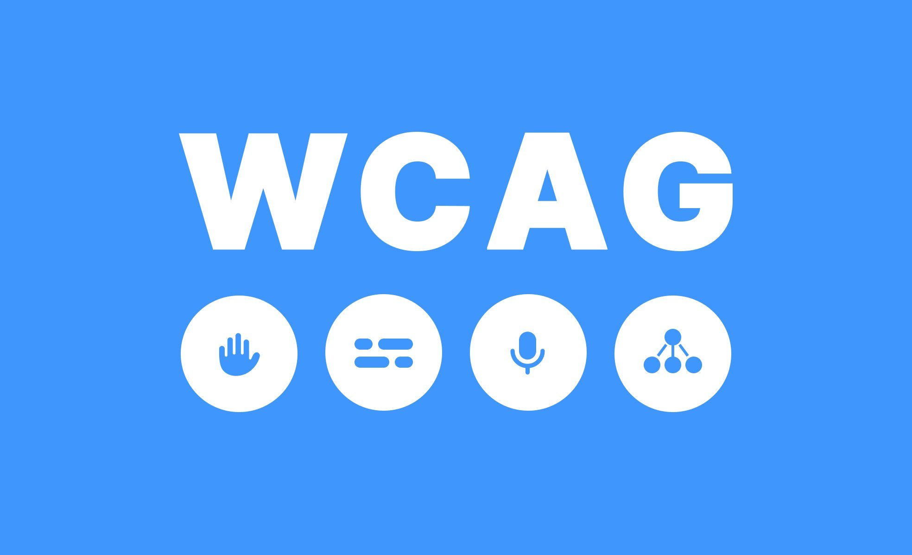

Introdução
Como desenvolvedor, você tem um papel essencial na criação de sites acessíveis. A acessibilidade digital não é apenas uma exigência legal, mas também uma maneira de garantir que seu conteúdo seja acessível a um público maior, incluindo pessoas com deficiência. A seguir, estão algumas práticas recomendadas para garantir que seu site atenda aos padrões de acessibilidade.
Práticas Recomendadas para Acessibilidade
- Uso de HTML Semântico: Utilize tags HTML de forma correta para garantir que o conteúdo do seu site seja lido corretamente por leitores de tela. Use
<header>,<article>,<section>e outras tags semânticas para organizar seu conteúdo. - Textos Alternativos para Imagens: Certifique-se de fornecer uma descrição adequada para todas as imagens usando o atributo
alt. Isso permitirá que usuários de leitores de tela compreendam o conteúdo visual. - Teclado Navegável: Garanta que seu site seja totalmente navegável por teclado. Isso inclui garantir que todos os links e formulários possam ser acessados e utilizados sem a necessidade de um mouse.
- Contraste Adequado: Verifique se o contraste entre o texto e o fundo é suficiente para garantir que pessoas com deficiência visual, como daltonismo, possam ler o conteúdo com facilidade.
- ARIA (Accessible Rich Internet Applications): Utilize atributos ARIA para melhorar a acessibilidade de elementos interativos e dinâmicos, como sliders e menus dropdown, garantindo que eles sejam anunciados corretamente por leitores de tela.
- Legibilidade e Fontes: Escolha fontes legíveis e certifique-se de que o tamanho da fonte seja ajustável. Evite usar fontes pequenas ou difíceis de ler.
Ferramentas para Desenvolvedores
Existem diversas ferramentas que você pode usar para testar e melhorar a acessibilidade do seu site:
- WAVE: Ferramenta online que permite realizar auditorias de acessibilidade em seu site.
- Google Lighthouse: Ferramenta de auditoria de código aberta que pode ser usada no Google Chrome para verificar a acessibilidade, desempenho e outras métricas do site.
- axe: Ferramenta de avaliação de acessibilidade que pode ser integrada diretamente no navegador.
- Color Contrast Analyzer: Ferramenta para verificar se o contraste entre o texto e o fundo está em conformidade com os requisitos da WCAG.
Diretrizes WCAG
As Web Content Accessibility Guidelines (WCAG) são as principais diretrizes internacionais para acessibilidade digital. Elas fornecem uma série de recomendações para tornar o conteúdo web mais acessível. As WCAG são organizadas em 4 princípios principais:
- Perceptível: O conteúdo deve ser apresentado de forma que possa ser percebido por todos os usuários.
- Operável: A interface do usuário deve ser operável por todos os usuários, independentemente de suas habilidades.
- Compreensível: O conteúdo e a interface devem ser compreensíveis.
- Robusto: O conteúdo deve ser robusto o suficiente para funcionar em uma ampla variedade de dispositivos e tecnologias assistivas.